学生たちの手で、
時代を超えた名車が美しく蘇る。
時代を超えた名車が美しく蘇る。
KICが、これまで挑んできたレストアプロジェクトの名車達。
「TOYOTA TRUENO AE86」
「MAZDA RX-7 FD」
「NISSAN SILVIA S13」
あなたは、この３台のクルマを知っていますか？
そう、かつて人気アニメに登場し
多くのファンから今も愛されている名車達。
「TOYOTA TRUENO AE86」
「MAZDA RX-7 FD」
「NISSAN SILVIA S13」
あなたは、この３台のクルマを知っていますか？
そう、かつて人気アニメに登場し
多くのファンから今も愛されている名車達。
そして、もう一台…。
「TOYOTA COROLLA LEVIN AE86」
新たなるレストアプロジェクトの物語が今走り出します。
「TOYOTA COROLLA LEVIN AE86」
新たなるレストアプロジェクトの物語が今走り出します。
KIC 一級自動車工学科、車体整備工学科、
数々のクルマと向き合ってきたトヨタカローラ福岡の
プロエンジニア達が”技術”と”感性”を駆使し、
果敢に挑む産学共同プロジェクト。
数々のクルマと向き合ってきたトヨタカローラ福岡の
プロエンジニア達が”技術”と”感性”を駆使し、
果敢に挑む産学共同プロジェクト。
動かないエンジンと、錆でボロボロのボディを
学生とプロエンジニアの手により美しくパワフルに蘇らせる
「ワンダフル」で「ドラマチック」な物語が始動する。
学生とプロエンジニアの手により美しくパワフルに蘇らせる
「ワンダフル」で「ドラマチック」な物語が始動する。